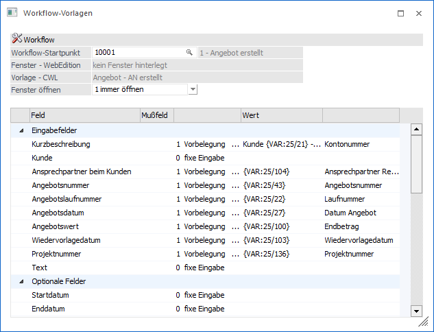
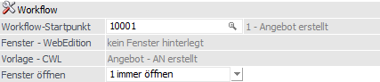
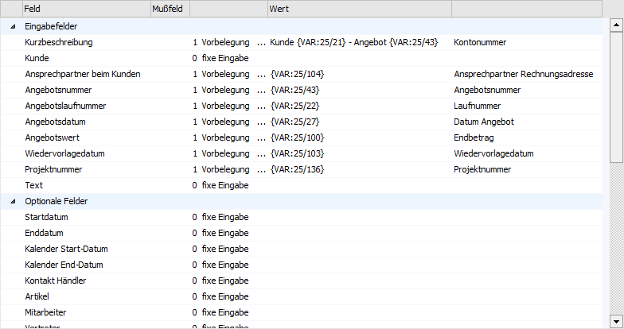
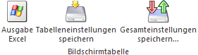
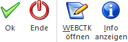
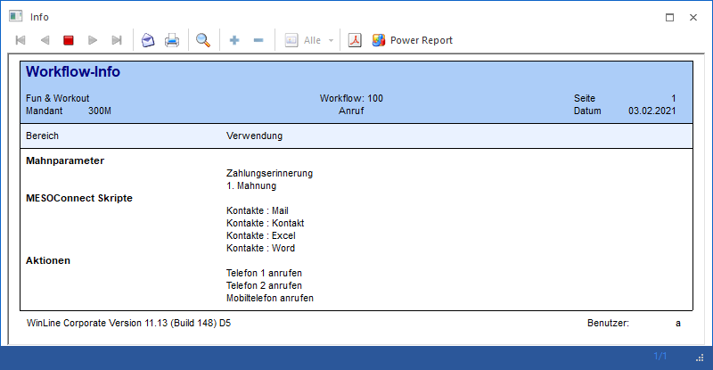

Über den Menüpunkt
1 WinLine START
1 Vorlagen
1 Workflow-Vorlagen
können Voreinstellungen für das Arbeiten mit Workflows bzw. Aktionsschritte im Zusammenhang mit der WinLine (WinLine CRM) und WEBEdition verwaltet werden.
D.h. wird ein Workflow bzw. ein Folgeschritt oder eine Aktion ausgehend von festgelegten Programmbereichen (Belegerfassen, Projektstati ändern, Mahnung, neuer Archiveintrag, Aktionen, Meso-Connect, Postausgangsbuch, etc.) geschrieben, so können bestimmte Felder bereits automatisch vorbelegt werden.

Welche Voraussetzungen müssen dafür gegeben sein:
ü Die WEBEdition (zumindest CRM I) oder das WinLine CRM muss im Einsatz sein.
ü In den CRM-Kompakt-Einstellungen (WinLine ADMIN - WEB Edition - CRM Kompakt) muss der Verweis auf die WWW-Adresse der WEBEdition hinterlegt sein.
Achtung
Auch wenn sich keine WEBEdition im Einsatz befinden sollte, muss das Feld "WWW-Adresse" mit einem Eintrag versehen sein. Ab Version 10.1 wird beim Speichern des Menüpunktes der Eintrag http://localhost/ automatisch gesetzt.
ü In der WEBEdition oder im WinLine INFO müssen CRM Aktionen, CRM Workflows mit Startpunkten oder CRM Folgeschritte definiert sein.
ü Ggf. müssen auch noch Fenster hinterlegt sein, in denen die Informationen für den Workflowschritt bzw. für den Aktionsschritt erfasst werden können.
In den "Workflow-Vorlagen" können dann folgende Felder bearbeitet werden:
Workflow

Ø Workflow-Startpunkt
Aus der Auswahllistbox kann ein Workflow oder ein Aktionsschritt gewählt werden, für welchen die Einstellungen vorgenommen werden sollen.
Ø Fenster - WebEdition
Hier wird angezeigt, welches (WEB-CTK-)Fenster zugeordnet wurde. Dieser Eintrag wird für die Darstellung der CRM-Maske in der WEBEdition, bezogen auf den gewählten "Workflow-Startpunkt", verwendet.
Eine Änderung des Fensters kann im Workfloweditor (WinLine INFO) erfolgen.
Ø Vorlage - CWL
An dieser Stelle wird die zugeordnete Vorlage angezeigt. Dieser Eintrag wird für die Darstellung der CRM-Maske in der WinLine, bezogen auf den gewählten "Workflow-Startpunkt", verwendet.
Eine Änderung der Vorlage kann im Workfloweditor (WinLine INFO) erfolgen.
Ø Fenster öffnen
Hier kann eingestellt werden, was mit dem Fenster bzw. der Vorlage - sofern etwas hinterlegt wurde - passieren soll:
ü 0 - nie öffnen
Das hinterlegte
Fenster bzw. die Vorlage wird nicht geöffnet. Die hier definierten Einstellungen
werden automatisch in den Workflow bzw. die Aktion geschrieben.
ü 1 - immer öffnen
Das
hinterlegte Fenster wird bei jedem Anstoßen des Workflow bzw. der Aktion
geöffnet. Der Einsatz dieser Variante sollte genau überlegt werden!
Beispiel
Es wird ein Massenmailing unter Verwendung einer CRM-Aktion ausgesendet (über das Postausgangsbuch). Bei Verwendung der Option "1 - immer öffnen" muss das Fenster / die Vorlage für jeden Datensatz einzeln bestätigt werden.
ü 2 - einmal öffnen
Bei dieser
Option wird das hinterlegte Fenster bzw. die Vorlage nur einmal geöffnet. Die
dort eingegebenen Daten werden in alle Datensätze, die danach ggf. abgearbeitet
werden (Massenmailing, Sammelrechnungsdruck, Mahnlauf etc.) übernommen. Werte,
die mit einer Variable vorbelegt werden (Einstellung "1 - Vorbelegung"), können
im aufgehenden Fenster bzw. in der aufgehenden Vorlage nicht bearbeitet
werden.
Vorbelegungstabelle

Die Tabelle ist - abhängig vom ausgewählten Workflow-Startpunkt - ist 2 Teile unterteilt:
ü Eingabefelder
Hier können die
Felder bearbeitet werden, die auch im Fenster bzw. der Vorlage des Workflows
bzw. der Aktion hinterlegt sind.
ü Optionale Felder
Hier stehen
die restlichen Felder zur Verfügung, die bei einem Workflow oder einer Aktion
vorbelegt werden können.
Ø Feld
In dieser Spalte werden die CRM-Felder (unterteilt nach Eingabefelder und Optionale Felder) dargestellt.
Hinweis
Wenn in einem Workflow bzw. einer Aktion ein Fenster und eine Vorlage hinterlegt wurden, dann wird die Vorbelegungstabelle gemäß dem Aufbau der Vorlage gefüllt.
Ø Mußfeld
Wenn in einem WEBEdition-Fenster ein Feld als Pflichtfeld deklariert wurde, dann wird in dieser Spalte ein dargestellt.
Hinweis
Die Mußfelder werden nur gekennzeichnet, wenn die Vorlagentabelle gemäß des WEBEdition-Fensters gefüllt wird.
Ø Vorbelegung
Für die Vorbelegung von Daten gibt es mehrere Möglichkeiten:
ü 0 - fixe Eingabe, Feld "Wert"
bleibt leer
Mit dieser Einstellung wird dieses Feld nicht beschickt.
ü 0 - fixe Eingabe, Feld "Wert" wird
gefüllt
In diesem Fall kann ein Wert vorbelegt werden, wobei es in vielen
Feldern einen Matchcode gibt, mit dem nach allen verfügbaren Werten gesucht
werden kann. Wenn ein Wert (z.B. fixer Vertreter oder fixe Kontonummer, Projekt
etc.) hinterlegt wurde, wird in der nächsten Spalte die Bezeichnung dazu
angezeigt.
ü 1 - Vorbelegung
Wenn diese
Option gewählt wird, kann im Feld "Wert" eine Variable angegeben werden (auch
hier kann mit der Matchcode-Funktion nach entsprechenden Einträgen gesucht
werden), welche dann durch die entsprechenden Daten ersetzt wird.
Tabellenbuttons

Ø Ausgabe Excel
Durch Anwahl des Buttons "Ausgabe Excel" wird der Inhalt der Tabelle nach Microsoft Excel übergeben.
Ø Tabelleneinstellungen speichern
Die Spalten einer Tabelle können grundsätzlich an beliebige Positionen verschoben, bzw. in der Breite entsprechend angepasst werden. Durch Anwahl des Buttons "Tabelleneinstellungen speichern" werden die Einstellungen benutzerspezifisch gespeichert und bei dem nächsten Aufruf des Programmpunktes wieder vorgeschlagen.
Ø Gesamteinstellungen speichern
Im Gegensatz zu "Tabelleneinstellungen speichern" können mit "Gesamteinstellungen speichern" mehrere Tabellenaufbauten gespeichert und nach Wunsch geladen werden. Zusätzlich werden Sonderfunktionen der Tabelle (z.B. "Spalte gruppieren") ebenfalls bei der Speicherung bedacht.
Buttons

Ø Ok
Durch Drücken des Buttons "Ok" bzw. der F5-Taste werden die vorgenommen Einstellungen gespeichert und der nächste Workflow bzw. die nächste Aktion kann bearbeitet werden.
Ø Ende
Durch Drücken des Buttons "Ende" bzw. der ESC-Taste wird das Fenster geschlossen. Eventuell vorgenommene Änderungen werden nicht gespeichert.
Ø WEBCTK öffnen
Durch Anklicken dieses Buttons wird das Programm "WEBCTK" geöffnet, in welchem man die WEBEdition-CRM-Fenster editieren bzw. neue Fenster anlegen kann.
Hinweis
Die Zuordnung des Fensters zum CRM-Workflow bzw. CRM-Aktion wird im Workfloweditor (WinLine INFO) definiert.
Ø Info anzeigen
Durch Anklicken des Buttons "Info-Anzeigen" wird eine Liste geöffnet, in der angezeigt wird, in welchen Bereichen dieser Aktionsschritt verwendet wird bzw. zur Anwendung kommt.
